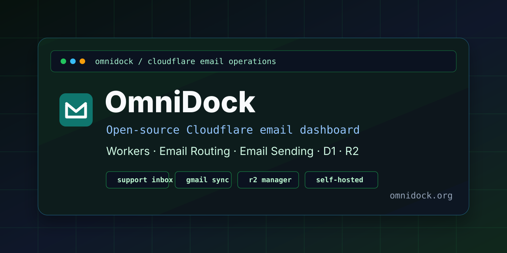
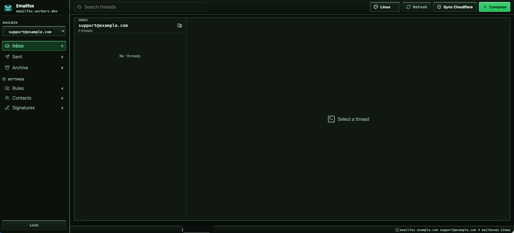
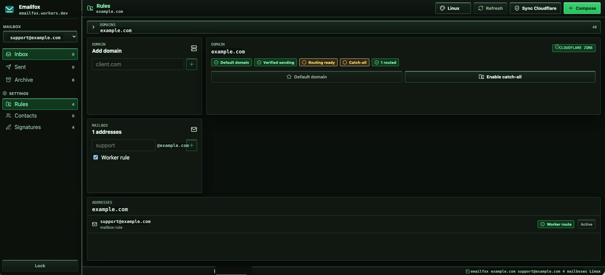

Email dashboard
Manage inbox, sent, and archive views across Cloudflare-managed mailboxes and external Gmail, Outlook, Yahoo, iCloud, or custom IMAP/SMTP accounts from a single operator interface.

OmniDockCloudflare-native email operations
An open-source dashboard for support inboxes, domain routing, Cloudflare Email Sending, D1 storage, R2 buckets, Gmail and external IMAP/SMTP sync, contacts, signatures, logs, file previews, uploads, and OCR-ready text search.
Manage inbox, sent, and archive views across Cloudflare-managed mailboxes and external Gmail, Outlook, Yahoo, iCloud, or custom IMAP/SMTP accounts from a single operator interface.
Built for Workers, Email Routing, Email Sending, D1, R2, secrets, bindings, and deployment workflows that stay inside your own Cloudflare account.
Browse buckets, preview PDF/image/text files, upload objects, download assets, delete safely, and index OCR/extracted text for document search.
OmniDock combines the daily workflows that usually live across Cloudflare dashboard tabs, email providers, local files, and spreadsheet-style tracking. It is built for private support teams, agencies, product operators, and developers who want a Cloudflare-native email operations dashboard without SaaS lock-in.
| Capability | What it covers | Cloudflare layer |
|---|---|---|
| Email inbox | Inbox, sent, archive, delete, read state, rich replies, mailbox scope, and global search. | Workers, Email Routing, D1, R2 |
| External accounts | Gmail, Outlook, Yahoo, iCloud, and custom IMAP/SMTP profiles with inbound sync and outbound send. | Worker secrets, D1 sync jobs |
| R2 bucket manager | Browse folders, preview files, upload batches, download objects, delete objects, and search paths/text. | R2 bindings, D1 text indexes |
| Document search | Search filenames, paths, text files, extractable PDFs, and saved OCR/text indexes for scanned files. | Workers, D1, R2 |
| Operations log | Audit sync, sends, warnings, errors, uploads, exports, and cleanup actions in a searchable table. | D1 |


OmniDock is designed for teams that want a self-hosted email operations console on Cloudflare rather than a hosted SaaS inbox. It keeps secrets in Worker configuration, stores operational data in D1, keeps raw messages and attachments in R2, and exposes a focused admin UI for day-to-day support and file workflows.
Connect external accounts as operator mailboxes without storing real passwords in D1. Gmail app passwords, Outlook credentials, Yahoo credentials, iCloud app passwords, or custom provider secrets live in Cloudflare Worker secrets. OmniDock stores only the provider, email address, IMAP/SMTP host settings, and the secret reference.
OmniDock syncs Cloudflare zones and helps operators understand which domains can send, receive, route a single mailbox, or accept catch-all mail. It is built for teams that manage many support addresses across many domains.
The Buckets area turns one primary mail bucket and any extra configured R2 buckets into a practical file workspace. Operators can switch buckets from a dropdown, browse folder prefixes, preview common file types, upload batches with visible progress, and delete objects through in-app confirmations.
OmniDock does not automatically run paid AI/OCR on every search. It searches extractable PDF text and stored text indexes. For scanned PDFs or images, open the object, choose Index text, paste OCR text from your preferred OCR tool, and OmniDock stores that index in D1 for future searches.
Fork the repository, create D1 and R2 resources, deploy from your fork, set the binding-safe deploy command, add runtime secrets, and open your Worker URL. The README includes the full install guide, required bindings, Cloudflare API token permissions, extra R2 bucket configuration, and first-login flow.